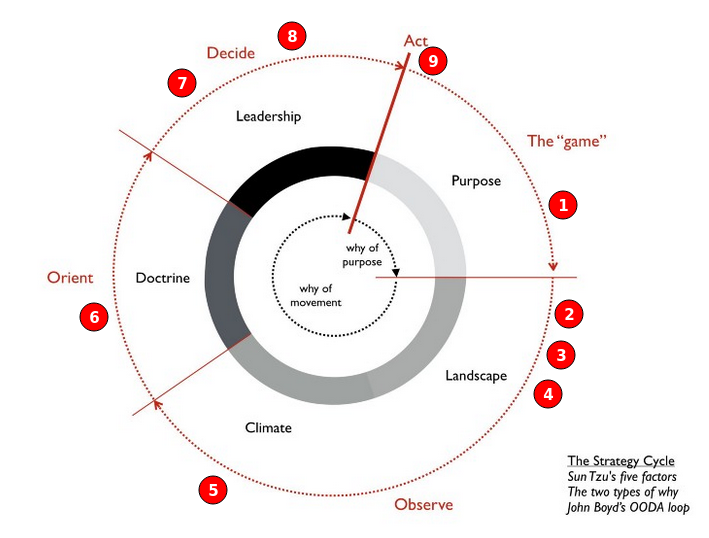

Strategy Workshop
(This page is in ‘work in progress’ state)
This workshop will teach you how to build business strategies. This is a 10 minutes text. In the future we will add more formats: video, powerpoint, and pdf. Here is a 3 min trailer:
Summary of all the steps in this workshop
- Imagine your team celebrate a successful year
- Write a customer, a need, and dependencies
- Draw a map
- Locate the dependencies on the evolution axis
- Add climatic patters
- Add doctrine
- Add gameplay
- Decide on actions
- Take actions
Repeat the 9 steps with the team every few weeks.

Those steps are called the strategy cycle. You can learn more in the resources section at the end of the workshop.
1. Imagine your team celebrates a successful year
Set up a 45 minutes session with your team and together imagine a celebration that everyone is part of. Write down who is there, what are they celebrating, how do they feel, when is it happening, and why are they there. You can start the session in 5 minutes meditation.
At the end of the session, write down a shared celebration that everyone on the team is part of and share it with other teams. Congrats! You just created a shared true north for the team.
2. Write down a customer, need, and dependency
Steps: 1. Write down name of a customer. 1. Write one need of this customer. 1. Write a few things that are needed to meet this need.
Example: 1. User: software engineer. 1. Need: build a web site. 1. Dependencies: choose a technology, learn how to use it, build a web site, test it, deploy it, maintain it.
3. Draw a map
TODO: add drawing
4. Locate the dependencies on the evolution axis
TODO: add drawing
References: - Evolutionary Characteristics. text format - Evolutionary Characteristics. image format
{kind=link}
5. Add climatic patters
TODO: add drawing
References: - Climatic Patterns. text format - Climatic Patterns. image format
{kind=link}
6. Add doctrine
TODO: add drawing
References: - Doctrine. text format - Doctrine. image format
{kind=link}
7. Add gameplay
TODO: add drawing
References: - Gameplay. text format - Gameplay. image format
{kind=link}
8. Decide on actions
9. Take actions
Optional Material
Cheatsheets: - Evolutionary Characteristics - Climatic Patterns - Doctrine - Gameplay - Glossary
Resources: - Sun Tzu’s Sūn zi bīng fǎ (孫子兵法 / Art of War) (1 min video) - John Boyd’s OODA Loop (1 min video) - Simon Wardley’s Wardley Maps (1 min video)